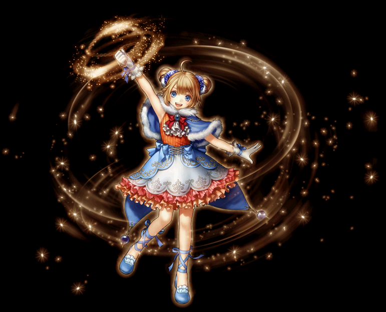
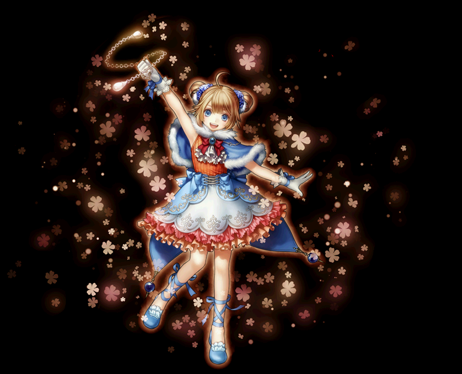
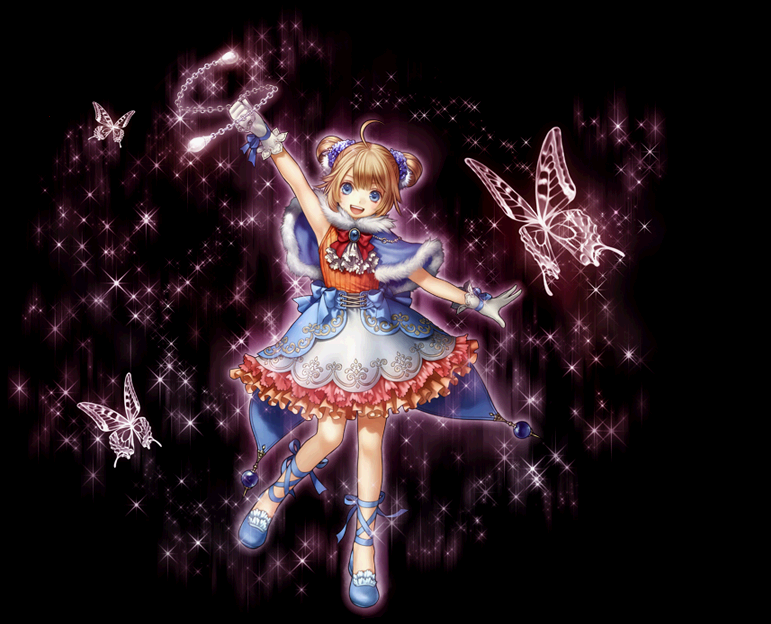

2018.6～ プリンセス 覚醒スキル一覧
2018/06/27 プリンセススキル改変前のデータ。
改変後は、2018/06/27バランスパッチ反映版を参考にしてください。
フォースクイーン
ケイオスクイーン
トランスクイーン
フォースクイーン
| フォースクイーン | |||||||
|---|---|---|---|---|---|---|---|
|  | |||||||
| [専用パッシブ] 精密攻撃 | |||||||
| スキル説明 |
命中率・限界ダメージが上昇する。 |
||||||
| スキル効果 |
物理攻撃の命中率補正が50％上昇、対象との距離に比例して限界ダメージが増加。 |
||||||
| [専用覚醒スキル] ワイルドランダムショット | ||||||||
|---|---|---|---|---|---|---|---|---|
| スキル難易度 | 4 | |||||||
| 必要スキル | ランダムショット[50] |
|||||||
| スキル説明 | スリングで単体の対象に弾丸を数回乱射する | |||||||
| レベル | 0 | 1 | 2 | 3 | 4 | 5 | ... | 50 |
| 消費CP | 210 | 213 | 216 | 219 | 222 | 225 | ... | 360 |
| 獲得CP | 175 | 178 | 181 | 184 | 187 | 190 | ... | 325 |
| 物理ダメージ | 300% | 306% | 312% | 318% | 324% | 330% | ... | 600% |
| 攻撃回数 | 7回 | |||||||
| 命中率補正値 | -5% | |||||||
| 備考 | 攻撃速度 1回当 0.37秒 | |||||||
| おしゃべり女王 | ||||||||
|---|---|---|---|---|---|---|---|---|
| スキル難易度 | 3 | |||||||
| 必要スキル | おしゃべり[50] |
|||||||
| スキル説明 |
ひっきりなしに、しゃべりまくって周囲にいる敵の一部を退屈で眠らせてしまう。 同時に気持ちよくなって強力なスキルを使用できるようになる。おしゃべりが終わったあとも, しばらくCPを追加獲得 |
|||||||
| レベル | 0 | 1 | 2 | 3 | 4 | 5 | ... | 50 |
| 消費CP | 55 | 55.5 | 56 | 56.5 | 57 | 57.5 | ... | 80 |
| 獲得CP | 210 | 213 | 216 | 219 | 222 | 225 | ... | 360 |
| キャスティング速度(秒） | 1.5 | 1.49 | 1.48 | 1.47 | 1.46 | 1.45 | ... | 1 |
| 効果範囲（m） | 3 | 3.03 | 3.06 | 3.09 | 3.12 | 3.15 | ... | 4.5 |
| 眠り確率（％） | 75% | 76% | 77% | 78% | 79% | 80% | ... | 125% |
| 眠り持続時間（秒） | 4秒 | |||||||
| 備考 | 8秒間、獲得CP量の1/4を毎秒ごとに追加で獲得。 | |||||||
| 備考 | 追加CP獲得は、CP獲得ボーナスの影響を受けない。 | |||||||
| ミラクルゴリアテスローター | ||||||||
|---|---|---|---|---|---|---|---|---|
| スキル難易度 | 5 | |||||||
| 必要スキル | ゴリアテスレイヤー [50] |
|||||||
| スキル説明 |
巨人ゴリアテも倒せるほど、力強い範囲型スリングの一撃 |
|||||||
| レベル | 0 | 1 | 2 | 3 | 4 | 5 | ... | 50 |
| 消費CP | 260 | 264 | 268 | 272 | 276 | 280 | … | 460 |
| 獲得CP | 195 | 198.5 | 202 | 205.5 | 209 | 212.5 | … | 370 |
| 物理ダメージ | 550% | 560% | 570% | 580% | 590% | 600% | … | 1050% |
| 命中率 | 10% | 10.20% | 10.40% | 10.60% | 10.80% | 11% | … | 20% |
| 爆発半径（px） | 115 | 116.3 | 117.6 | 118.9 | 120.2 | 121.5 | … | 180 |
| 特殊効果 | 敵の防御力50％を無視 | |||||||
| 特殊効果 | クリティカル固定(ダブルクリティカル可能) | |||||||
| 特殊効果 | 力の80%分に比例した限界突破ダメージ(力 * 3。力4000まで) | |||||||
| 備考 | 段階別ダメージ適用[60～120％](20%刻み) | |||||||
| ノックバック距離 | 50px | |||||||
| 移動速度減少 | 90% | |||||||
ケイオスクイーン
| ケイオスクイーン | |||||||
|---|---|---|---|---|---|---|---|
|  | |||||||
| [専用パッシブ] マジックスリング | |||||||
| スキル説明 | 同じモンスターを攻撃するとき、ボトル投げスキルの最終ダメージが増加。 | ||||||
| スキル効果 |
同じモンスターを攻撃するとき、ボトル投げスキルの最終ダメージが増加。 |
||||||
| [専用覚醒スキル] 跳弾ボトル投げ | ||||||||
|---|---|---|---|---|---|---|---|---|
| スキル難易度 | 1 | |||||||
| 必要スキル | ボトル投げ [50] |
|||||||
| スキル説明 |
スリングでファイアーボトルや毒ガスなどを投げるのに特化した技術。 ファイアーボトルや毒ガス、フリージングなどの効果を極大化させることができる。 投げたボトルはバウンドし、周りの敵にも被害を及ぼす |
|||||||
| レベル | 0 | 1 | 2 | 3 | 4 | 5 | ... | 50 |
| 消費CP | 10 | 10.2 | 10.4 | 10.6 | 10.8 | 11 | ... | 20 |
| 獲得CP | 40 | 40.8 | 41.6 | 42.4 | 43.2 | 44 | ... | 80 |
| 弾丸属性ダメージ（％） | 500% | 510% | 520% | 530% | 540% | 550% | ... | 1000% |
| ボトルバウンド回数 | 5回 | |||||||
| 効果範囲（m） | 3.0m | |||||||
| 備考 | ケイオスクイーンのパッシブスキル「マジックスリング」の効果によってダメージが増加する | |||||||
| フラワーブーケシャワー | ||||||||
|---|---|---|---|---|---|---|---|---|
| スキル難易度 | 3 | |||||||
| 必要スキル | フラワーシャワー [50] |
|||||||
| スキル説明 | スリングに花を盛って敵にでたらめに振り撤く。敵が油断するため全ての抵抗力が低下する。抵抗力抵抗は重複適用される | |||||||
| レベル | 0 | 1 | 2 | 3 | 4 | 5 | ... | 50 |
| 消費CP | 35 | 35.5 | 36 | 36.5 | 37 | 37.5 | … | 60 |
| 獲得CP | 125 | 127.5 | 130 | 132.5 | 135 | 137.5 | … | 250 |
| 消費確率 | 11% | 10% | 10% | 10% | 10% | 10% | … | 9% |
| 属性/全異常抵抗低下（％) | 25% | 25.40% | 25.80% | 26.20% | 26.60% | 27% | … | 45% |
| 追加属性抵抗低下（％） | -34% | -34.60% | -35.20% | -35.80% | -36.40% | -37% | … | -64% |
| 範囲半径（m） | 2.5 | 2.53 | 2.56 | 2.59 | 2.62 | 2.65 | … | 4 |
| 低下時間 | 15秒 | |||||||
| 備考 | 1回スキルを使用すると従来の属性抵抗低下、2回スキルを使用した敵に追加属性抵抗低下が発動。 | |||||||
| 即効ポーション投げ | ||||||||
|---|---|---|---|---|---|---|---|---|
| スキル難易度 | 1 | |||||||
| 必要スキル | ポーション投げ [50] |
|||||||
| スキル説明 |
スリングにヒーリングポーションを盛って蒸気状態でPTメンバーに振りまく。 周囲の全PTメンバーが恩恵を受け、効率を高めて消費するポーションの個数をたまに減らすことができる。 スキルレベルによって使用可能な種類が増加。回復される一部を即時回復可能。 |
|||||||
| レベル | 0 | 1 | 2 | 3 | 4 | 5 | ... | 50 |
| 消費CP | 5 | 5.1 | 5.2 | 5.3 | 5.4 | 5.5 | … | 10 |
| 獲得CP | 45 | 45.9 | 46.8 | 47.7 | 48.6 | 49.5 | … | 90 |
| 効果範囲（m） | 4 | 4.05 | 4.1 | 4.15 | 4.2 | 4.25 | … | 6.5 |
| 消費確率 | 11% | 10% | 10% | 10% | 10% | 10% | … | 9% |
| 回復量（％） | 100% | 101% | 102% | 103% | 104% | 105% | … | 150% |
| 備考 | 回復量の40％を即時回復する。 | |||||||
| 備考 | - 使用可能ポーション スモールヒールポーション 、ヒールポーション 、ラージヒールポーション 、フルヒールポーション 、グレートヒールポーション 、改良型 グレートヒールポーション 、デラックスヒールポーション 、改良型 デラックスヒールポーション | |||||||
トランスクイーン
| トランスクイーン | |||||||
|---|---|---|---|---|---|---|---|
|  | |||||||
| [専用パッシブ] ドレスパワー | |||||||
| スキル説明 |
鎧防御力に比例し、プリンセスの変身攻撃が致命打で発動する確率が増加 |
||||||
| スキル効果 |
変身攻撃の致命打発動確率が、鎧基本防御力の50％増加。 |
||||||
| [専用覚醒スキル] 特殊武器変身 | ||||||||
|---|---|---|---|---|---|---|---|---|
| スキル難易度 | 2 | |||||||
| 必要スキル | 武器変身 [50] |
|||||||
| スキル説明 |
一定時間の間、指定したパーティーメンバーの武器に変身してパーティーのインベントリに入りこむ。 武器の性能はプリンセスやパーティーメンバーの能力に比例。プリンセスが変身した武器を所持していると物理攻撃や魔法攻撃の致命打率が上昇。 |
|||||||
| レベル | 0 | 1 | 2 | 3 | 4 | 5 | ... | 50 |
| 消費CP | 90 | 91.5 | 93 | 94.5 | 96 | 97.5 | ... | 165 |
| 獲得CP | 0 | 0 | 0 | 0 | 0 | 0 | ... | 0 |
| 持続時間（秒） | 525 | 535 | 545 | 555 | 565 | 575 | ... | 1025 |
| 増加ダメージ | 220% | 224% | 228% | 232% | 236% | 240% | … | 420% |
| 増加ダメージ | 60% | 61% | 62% | 63% | 64% | 65% | … | 110% |
| 武器特性 | 変身武器のクリティカル確率30％増加 | |||||||
| 武器特性 | 変身武器の魔法クリティカル確率15％増加 | |||||||
| 属性攻撃力 | プリンセスの各属性抵抗（％）500/100 | |||||||
| 武器の種類 | 対象と姫のうち、低いレベルを参考にした対象が使用可能な最もレベルの高いノーマル武器 | |||||||
| その他 | 武器を所持したメンバーが死亡/マップ移動/武器を捨てる/破壊/パーティー解除した場合、武器変身が解除される。 | |||||||
| 備考 | 追加致命打率は、他の致命打率上昇の効果とは重複せず、高いほうのみ適用。 | |||||||
| 備考 | 武器変身中に、ポーション投げ（即効ポーション投げ）/薬投げ/フラワーシャワー（フラワーブーケシャワー）/キャンディーシャワーを使用可能。 | |||||||
| 備考 | 武器変身中、ボトル投げのダメージが50%増加 | |||||||
| ビックバルーンアタック | ||||||||
|---|---|---|---|---|---|---|---|---|
| スキル難易度 | 4 | |||||||
| 必要スキル | バルーンアタック [50]
|
|||||||
| スキル説明 |
ワンドを使って巨大プリンセスに変身。少しの間、ボールのように丸くなり敵を踏みつぶして攻撃することができる |
|||||||
| レベル | 0 | 1 | 2 | 3 | 4 | 5 | ... | 50 |
| 消費CP | 210 | 213 | 216 | 219 | 222 | 225 | … | 360 |
| 獲得CP | 0 | 0 | 0 | 0 | 0 | 0 | … | 0 |
| 物理攻撃力 | 200% | 204% | 208% | 212% | 216% | 220% | … | 400% |
| 防御力増加 | 120% | 122% | 124% | 126% | 128% | 130% | ... | 220% |
| 変身持続時間（秒） | 30 | 30.5 | 31 | 31.5 | 32 | 32.5 | ... | 55 |
| 攻撃間隔 | 1秒 | |||||||
| 敵麻痺確率 | 100% | |||||||
| 麻痺持続時間（秒） | 1秒 | |||||||
| 攻撃範囲（m） | 1.5m | |||||||
| 攻撃回数 | 3回 | |||||||
| 体力比例ダメージ | 500% | |||||||
| 体力比例ダメージ回数 | 3回 | |||||||
| 一緒にウサギ変身 | ||||||||
|---|---|---|---|---|---|---|---|---|
| スキル難易度 | 1 | |||||||
| 必要スキル | うさぎ変身 [50]
|
|||||||
| スキル説明 |
短時間、 小さいウサギへ変身。変身する時、周辺の敵もウサギ及びカエルに変身させる。 しばらく敵のターゲットにならないため, 敵から逃げる時に使用。一度使用すると, 変身の衝撃で再使用するまでは時間がかかる。 |
|||||||
| レベル | 0 | 1 | 2 | 3 | 4 | 5 | ... | 50 |
| 消費CP | 5 | 5 | 5 | 5 | 5 | 5 | … | 5 |
| 獲得CP | 10 | 10.2 | 10.4 | 10.6 | 10.8 | 11 | … | 20 |
| 持続時間（秒） | 3 | 3.05 | 3.1 | 3.15 | 3.2 | 3.25 | … | 5.5 |
| ウサギ持続時間 | 5秒 | |||||||
| クールタイム(最小60秒) | 70 | 69 | 68 | 67 | 66 | 65 | … | 60 |
| 移動速度 | 150% | |||||||
| 特殊効果 | 回避率+100% | |||||||
| 備考 | 対象一人を50％の確率でウサギやカエルで10秒間変身させる。セミボス以上の場合、33％の確率で変身させる。 | |||||||
| 備考 | 低下/呪い抵抗で抵抗される。 | |||||||
| 備考 | ウサギの状態で攻撃される時、その攻撃から一定範囲に100%の確率で気絶効果発生。 | |||||||